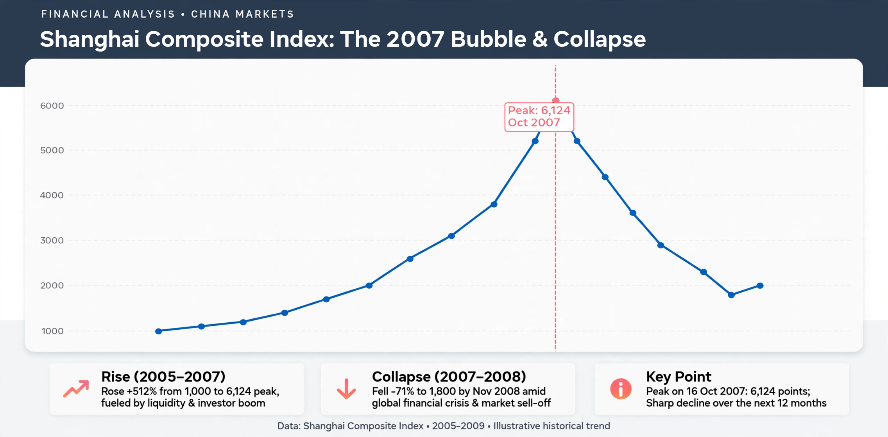

SSE Composite Index
| SSE Composite Index | |
|---|---|
| Exchange | Shanghai Stock Exchange |
| Base value | 100 (19 December 1990) |
| Constituents | All A- and B-shares listed in Shanghai |
The SSE Composite Index (also known as the Shanghai Composite) is a stock market index of all stocks — both A-shares and B-shares — traded on the Shanghai Stock Exchange. It is the most widely quoted benchmark of the Chinese mainland stock market.

History
Launched with a base value of 100 on 19 December 1990, the index soared past 6,000 during the 2007 bull market before collapsing in the global financial crisis, and again experienced extreme volatility in the 2015 Chinese stock market crash, which prompted government intervention including a "circuit breaker" mechanism and trading halts.
Related indices
- SZSE Component Index — the benchmark of the Shenzhen Stock Exchange
- CSI 300 — 300 large-cap stocks across both Shanghai and Shenzhen